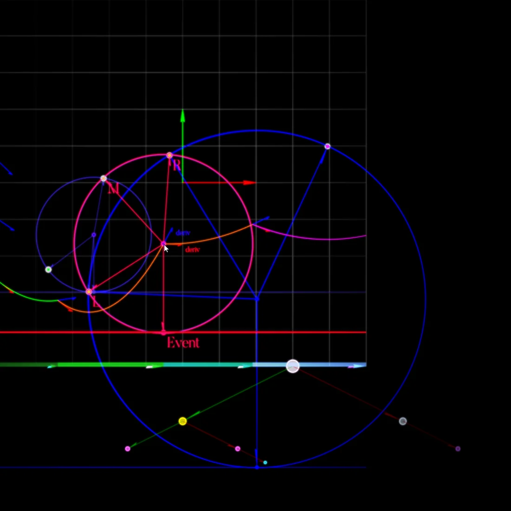
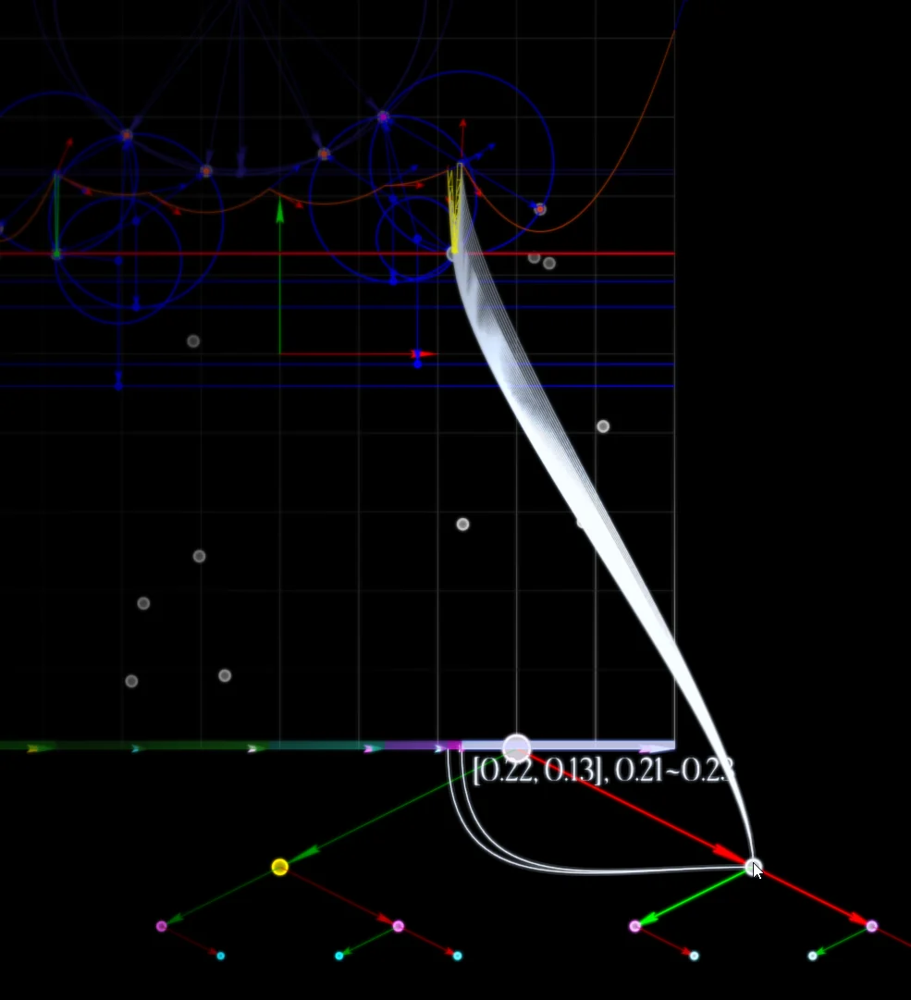

Interactive application Experimental
Interactive Video
Overview · selected highlights
Fortune’s Loom
Follow Fortune and Apollonius geometry through the events, search structures and arithmetic decisions that create the diagram. Degenerate cases and precision policies remain visible; the 3D sweep extension is explicitly an unfinished exploration.
EventStructureEdge
- y↓
Move the sweep
Site and circle events change the geometric frontier.
- ⌘
Maintain the state
Inspect beachline trees, queue contents and invalidated events.
- ∿
Construct the edges
Follow moving breakpoints into the evolving diagram.
- Δ
Check the evidence
Compare raw construction, reference edges and supported precision policies.
The browser port includes a subset of the desktop studies and arithmetic representations; some difficult cases behave differently.


